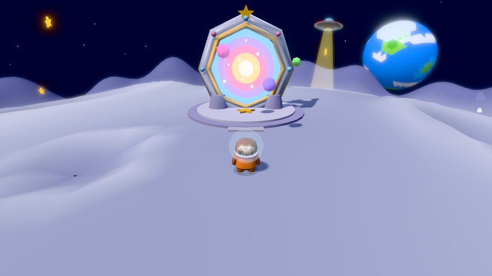
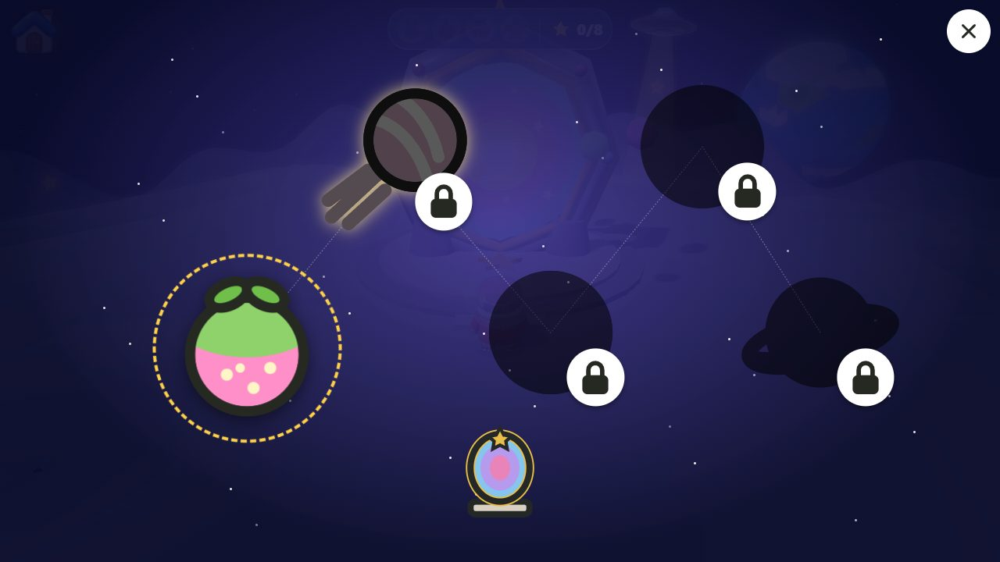
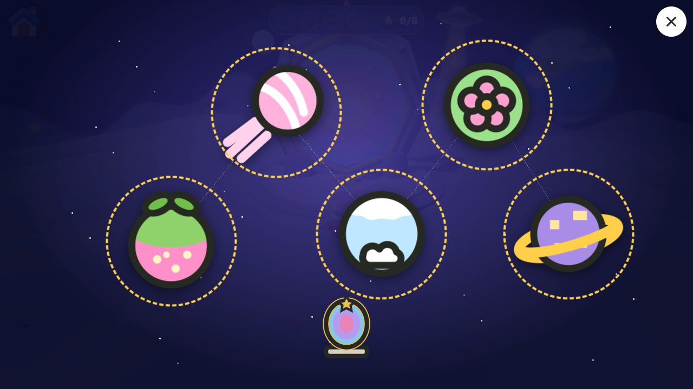
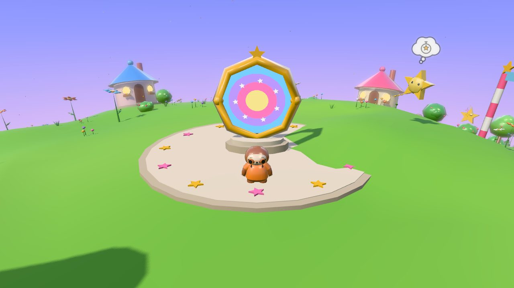
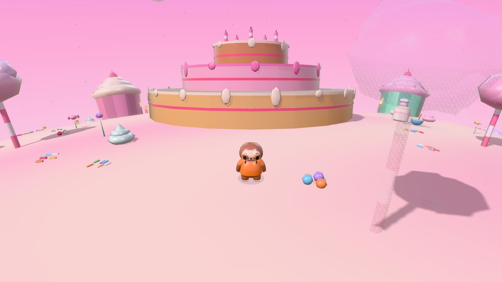
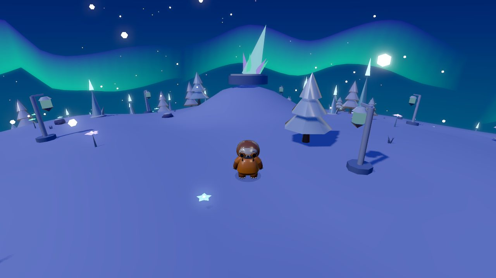
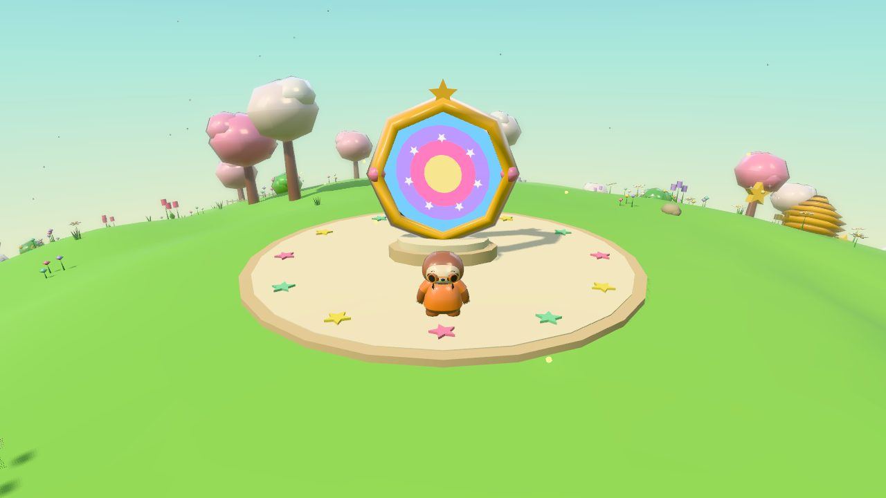
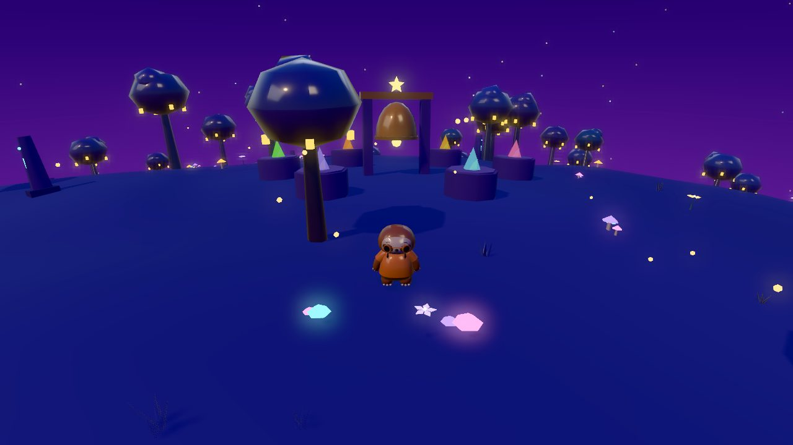

Nouvelles
Les Îles cosmiques, cinq petites planètes à visiter depuis la Lune
· Strategic Sloth

Il y a du nouveau sur la Lune. Un Portail des étoiles se dresse maintenant près de l’endroit où la fusée se pose, et il ouvre une carte de cinq petites planètes. Chacune est un petit monde entier dont on peut faire le tour en courant, par-dessus et par-dessous, sans aucun chargement.
Comment se rendre aux planètes
- En ville, allez à la fusée jouet sur la plage nord-ouest et appuyez sur le bouton d’action. Elle vous emmène sur la Lune.
- Sur la Lune, trouvez le Portail des étoiles : un anneau de pierre avec des étoiles qui tourbillonnent à l’intérieur et de petites planètes qui tournent autour, juste au nord de la fusée. Approchez-vous et appuyez sur le bouton d’action pour ouvrir la carte des étoiles.
- Touchez Starberry Planet, la seule ouverte au début. Vous traversez le portail et atterrissez sur une plateforme au sommet de la planète.
- Pour revenir, entrez dans le petit portail près de la plateforme, ou appuyez sur le bouton de la maison n’importe où sur la planète.

Chaque planète ouverte apparaît aussi avec les voyages dans la Boîte à jeux, pour y retourner directement la prochaine fois.
Comment ouvrir la planète suivante
Chaque planète a 20 fragments d’étoile à trouver et un télescope. Dès que vous avez trouvé 10 fragments sur une planète, la porte de son télescope s’ouvre. Regardez dedans et vous apercevez la planète suivante, qui s’ouvre alors sur la carte des étoiles. L’ordre est Starberry Planet, Candy Comet, Frostfluff Moon, Bloomheart et Starlight Ruins. Le vieux télescope de Starlight Ruins, la dernière, montre les cinq.

Quoi faire sur chaque planète
- Trouver 20 fragments d’étoile : sur des rochers, au-dessus des chutes, en haut des choses. Certains n’apparaissent qu’après une énigme, un vol plané ou une course.
- Ouvrir 5 coffres au trésor.
- Résoudre des énigmes en images : allumer des lanternes, appuyer sur des pierres, sauter un air sur des cristaux qui chantent. Impossible d’échouer : après une erreur, l’air rejoue simplement.
- Rencontrer trois amis. L’un vous demande de rapporter quelques objets, un autre organise les courses et le dernier montre ce qu’il reste à faire.
- Monter sur un geyser et planer à travers six anneaux.
- Faire la course tout autour de la planète. Battez le temps de l’étoile pour gagner une étoile, et réessayez autant que vous voulez.
- Trouver un petit ami qui vous suit partout, comme le bébé Starling qui sort d’un œuf sur Starberry Planet.
- Vous faire un ami du Wildling de la planète.
Tout rapporte des pièces et de l’XP la première fois, et la quête de chaque planète donne aussi une couleur spéciale pour les tenues. Rien ne peut être perdu et rien n’est à vendre sur les planètes.
Les cinq planètes
Starberry Planet

La première planète, avec des prés, des buissons de fraises-étoiles et un campement avec un feu au sommet. D’un côté, Crystal Hollow, plein de cristaux lumineux et d’une salle cachée. De l’autre, les Cloudfall Gardens, avec des chutes, des pierres flottantes et l’observatoire. En bas, le ciel passe au crépuscule dans Twilight Grove, où quatre lanternes font fleurir le Glow Tree. Bramble, une hérissonne pâtissière, prépare une tarte aux fraises-étoiles et a besoin d’un ingrédient de chaque côté de la planète.
Candy Comet

Une planète plus petite et plus sucrée. Grimpez sur un gâteau géant à trois étages pour allumer ses cinq bougies, rebondissez sur des collines de gelée qui vous lancent haut, et sautez l’air des cloches de tire pour ouvrir un jardin caché. Mallow la guimauve veut un sundae, et Fizz, l’esprit du soda, organise un tour de piste et un parcours de sauts.
Frostfluff Moon

Ici, la neige tombe partout. Glissez sur la Glacier Rink, traversez le Glacier par son tunnel et allumez les lanternes de glace d’Aurora Hollow, où il fait toujours nuit sous les aurores boréales. Bundle, le bébé ours polaire, prépare du chocolat chaud si vous lui apportez ce qu’il faut, et une boule de neige gelée dans la grotte de glace dégèle pour devenir Flurry, qui vous suit.
Bloomheart

Une planète jardin. Grimpez la Sunflower Tower, un escalier de fleurs géantes, ouvrez le jardin des roses et le jardin de l’étang, et réveillez cinq boutons endormis pour ouvrir la grande Moon Bloom. Cinq petits amis se cachent sur la planète et vous suivent une fois trouvés. Tansy la tortue a besoin d’une goutte de rosée, de miel et d’une graine de soleil pour son jardin.
Starlight Ruins

La dernière planète et la plus rusée, toujours sans échec possible. Tournez des pierres-lentilles pour guider un rayon de lumière jusqu’à l’œil du soleil et réveiller Cogling, un petit robot-étoile mécanique. Retournez des runes pour faire apparaître un pont de lumière, faites sonner les Moonbells et aidez Quill le hibou à retrouver les trois pièces perdues de sa longue-vue. Des anneaux dorés font le tour de la planète dans le ciel.
Jouer ensemble
Quand un adulte a activé le jeu en ligne, les amis sur la même planète se voient et peuvent résoudre ses énigmes ensemble, chacun faisant sa part. Le jeu en ligne reste désactivé tant qu’un adulte ne l’active pas, et chaque planète se joue exactement de la même façon en solo.
Chaque planète abrite aussi un Wildling timide. Découvrez-les tous dans Voici les Wildlings.